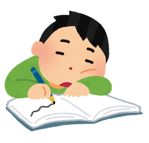

投稿日: 2020/11/16 23:54:41
カテゴリ: 闘病記
サムネイル:
さて、もともとこのブログは闘病記を書くために作ったようなものだったのだけれど、蓋を開けてみたら全然闘病記書いてなくって、予想外に日本語入力とかタスク管理のことばっかり書いてて自分でも意外。
（ちなみに今の仕事では基本的にUnreal EngineとかUnityとか、TouchDesignerとかみたいな、いわゆるリアルタイムグラフィックエンジンに向き合っているのだけれど、そういうことこそブログに書いて発信していけばいいのになと思いつつ、ブログはなんとなくオフモードというか、趣味でやってることを書きたいので、仕事でやってることはモチベーション的になんだか…）
ちなみに闘病記はいつも日記帳とかNotionとかに書いているのだけれど、いざ公開しようと思うとつい気が引けてしまって、なかなか公開に踏み切れなかったりする。
けどまぁ自分自身がどういう風に病気に向き合ってるかも、たまには発信してみてもいいかなと思ったり。

今日は、自分の持病の特徴である「だるさ」にどう向き合っているかについて。
自分の場合、基本的にはその日の身体負荷に対して服薬が少ないとだるくって、ちょうどいいと元気で、多すぎると動悸がしたりする。
基本的にはだるさの種類を自分でよく見極めて、薬を増やして対応している。というのも、急性副腎不全症状が起きて倒れたりなんかすると大変なので、そういう最悪の状態が起こりかねないときは躊躇せず薬を増やす。
ときどき、特に仕事で無理してるときとかは、自分の状態に気づくのが遅れて、バスで移動中にめっちゃしんどくなって慌てることも多いので、常にマインドフルネスであることを心がけている。
…けど、時々、今日はだるいけど薬増やさなくても大丈夫そう、とか、単に仕事で頑張りすぎてだるいだけだから、ゆっくり過ごしてみようとか、思うときがある。
というのも、あくまで個人の感想だけれど、だるさって、何か頑張ったことに対する代償だと思っていて、休みたいって身体が思っているサインだと思うので、例えばさっき書いたみたいに状況的に飲まないとヤバいってならない限り、自分は基本的にベースの量を守って過ごすようにしてる。
主治医の先生は、わからないときは増やしなさいってアドバイスしてくれるし、自分も外出先とか、家で一人で過ごしてるときに起こる体調不良の場合は、基本躊躇せず薬を増やすようにしているのだけれど、実はそれなりに副作用もあるので無闇には増やさないようにしてる。
一度思い切って増薬してしまうと、少しずつ減らさないといけないので、その間はちょっとオーバーヒート気味になるのであんまり好きではない。活動しすぎたり、動悸がしたりするし。
（蛇足だけれど、自分がタスク管理に妙にこだわるのは、服薬管理がシビアだからだったりするかもしれない。）
で、さっきの話に戻ると、ときどき、だるいけどだるいまま過ごしてみようかなっていう日がある。だるさに向き合ってみようかな、と。
もちろん、高熱が出たりして、いくら薬を増やしてもだるさに抗えないときもある。
そんなとき、自分が好きな本の、風邪の効用という本をよく思い出す。
")
この本は自分がバイブルのように何度も読み返している本で、ときどき改めて読んではいろんな発見がある。
最近は減ってきたけど、自分はやっぱり相対的にだるい日が人よりも多いので、だるい日の過ごし方をどうすればいいか、何年も悩んできた。
そういうとき、Amazonで見つけたこの本に感銘を受けて、この本に出会ってからというもの、できるだけ何もしないようにしてる。
できる限り、ぼーっと、自分の身体の状態を感じながら、たまにほんのちょっと漫画とアニメをチラッと見て（それくらいは許して…）、身体をちょっとマッサージして寝る。余裕があるときはストレッチしたり、少しだけ歩いてみたり。
つまりは、だるい日に無理に元気に過ごそうとするのではなくて、だるい自分を認めつつ、今だけなんだから、あるがままを受け入れて過ごそうっていう感じ。
そうすると、とっても早く回復するような気がする。
これはだるい日に限らず、マインドフルネスを心がけて過ごした日は、すごく身体的に充足している気がするし、その翌日もぜんぜん違う。
それに気づいてから、自分は迷ったらマインドフルネスに過ごすようにしていて、それ以来、前に比べて随分調子の悪い日が減ったと思う。
（それと、だるい日にできるだけ向き合うことで、なんとなく、自分自身の精神的なバランスが取れてるような気がする。無理に頑張ろうとしなくなるというか、そういう日があることでなんとなく身の丈を弁えられるというか。）
ただ、マインドフルネスであることは、自分自身に一番効果があると思う一方で、一番実践が難しいことだなって思う。
マインドフルネスであるためには、目の前にある楽しいこと、いわゆる一時的な快楽にすべて目を瞑らないといけないし、何より、何もしないというのが一番難しい。つい気を緩めるとすぐマインドフルネスではなくなってしまう。
FacebookとかTwitterを眺めていると、楽しそうなことなんて山程目の前に現れるし、すべてが広告というか、知らずしらずのうちに何か買っちゃってハマったりしちゃう。
じゃあSNSを開かなければいいんじゃないか、と思うけれど、なかなかそう簡単にはいかないもので、SNSを閉じれたとしても漫画が目の前にあったり、テレビがあったりと、「今ここにだけに集中する」ということは、思いの外難しい。
そこで、自分はマインドフルネスをちょっとだけ拡大解釈して、皿洗いしたり、買い物したり、お掃除したり、そういう、「今やっている行為」に集中することができたら及第点だと思うようにしている。
けど、あんまりにそれを拡大解釈するとゲームとか漫画もアリな気がしてきてしまうので、個人的には文字情報等で別の世界観が付加される行為はナシかなと思ってる。でも、ある意味仕事とかで思い悩んでうーんと思考に詰まっている状態よりは、相対的にマインドフルだと思うので、マインドフルネスにも段階があるのだと思う。
もちろん状況によっては仕事のことを考えてる方がマインドフルネスだったりすることもあると思う。
（ちなみにその時々でできる「今に集中できる度合い」で、ストレス度合いがわかったりするらしい。）
ということで、自分はマインドフルネスがどうしても難しい、っていうくらいストレスフルなときは、自分は、目の前にある現実から逃げなければOK、今の自分を大切にしていればOKというマイルールを設けている。
例えば、漫画を読んだりすることが、そのときの自分に対する現実逃避だったら、マインドフルネスではない状態だとする。でも、仕事に一杯一杯になる方が今の自分をないがしろにしてしまうようであれば、漫画を読むことの方がマインドフルなので、場合によっては漫画もOKといった具合。
つまり、今いる自分を大切にしている行為であれば、OKっていうマイルール。
あくまでマイルールなので、ほんとにマインドフルネスなものとは必ずしも言い切れないけれど、でも、これが結構ストレスフルな日には役立ったりする。
やろうとしていることを、このマイルールの天秤に一度かけることで、どっちが今の自分にとって大切かなと、一瞬だけ間をおいて考えることができるし、自分は、そうやって一度間をおいてみることが大事かなって思う。
さて、だいぶ脱線したけれど、自分がだるい日をどんな感じで過ごして、できるだけだるい日がないようにするために心がけていることはこんな感じ。
だるい日は、無理に元気に過ごそうって思うんじゃなくて、あるがままを受け入れて、これが自分なんだなーと思いつつ、だるく過ごすのが、今のマイブーム。
…といっても、人よりもだるい日が多い自分が、こうすればいいよって書くこともなんだか自己矛盾というかナンセンスな気もしてくるので、あくまで参考程度に。
自分も、こうやって毎日マインドフルネスに過ごしていれば、いつかは持病が治ったりしないかなーなんて、淡い期待を持ってたりするけれど、どうやら難病というのはそんなに甘くないみたい。
けれど、こうやって自分なりの対処法を書くことが、未来の自分にとってもそうだし、何かしらのヒントになるといいなって思う。